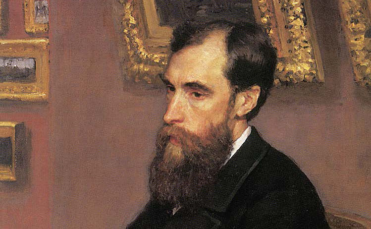
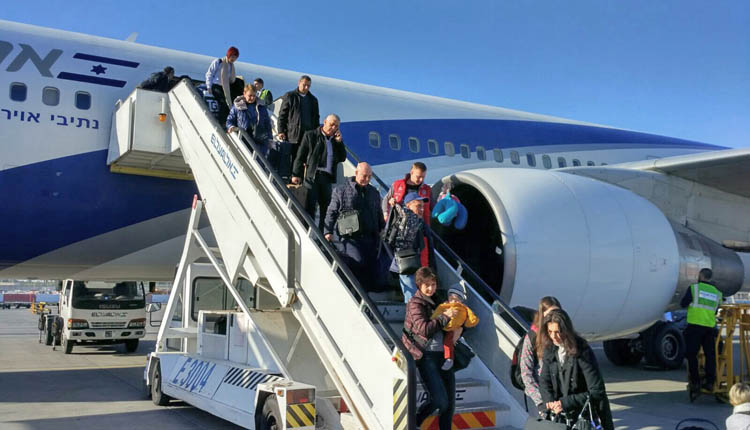
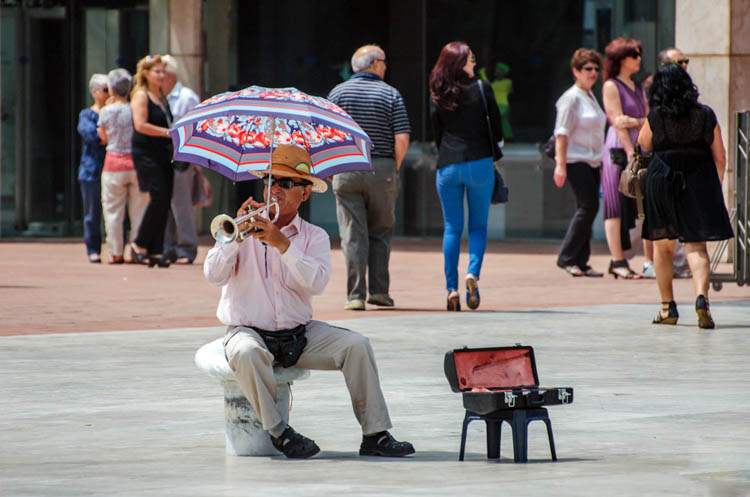

Есть ли МЕСТО МЕЦЕНАТСТВУ в теле Мессии СЕГОДНЯ?
Диалог украинского бизнесмена и израильского художника о меценатстве и поддержке творческих проектов.
Натали Осыпа закончила Европейский Университет, факультет «Финансы и предпринимательство», автор проекта "Christian Business".
Эфраим Калиш: Есть ли место меценатству в теле Мессии сегодня? Уже давно мне хотелось пообщаться с бизнесменами на эту тему. Это не очень удобная тема, так как м.б. воспринято, будто я хочу получить денег и т.п.

Художник: И.Е.Репин - портрет мецената Третьякова (фрагм.)
Финансовая поддержка для художника - это конечно всегда хорошо, но меня волнует самая суть проблемы. Это не секрет, что жизнь художника – не проста. А возможность для него жить от своего искусства для многих выглядит просто сказкой… Задачи и проблемы, стоящие перед творческими людьми существуют повсюду, но у нас, в Израиле, они удесятеряются естественным образом. Помните этот анекдот: если еврей спускается по трапу самолета и не держит в своих руках скрипку, значит он играет на рояле. Быть музыкантом в Израиле очень не просто, страна – маленькая, а музыкантов в ней очень много. Вы не можете организовать по симфоническому оркестру на каждый городской квартал… А они все продолжают прибывать. И в обозримой перспективе этот процесс будет только нарастать. Ведь Бог обещал собрать всех евреев из всех стран, куда рассеял их. Голливуд снимется со своего места и… Я верю, у творческих израильтян есть особое призвание к служению народам в последнее время. От того и мой повышенный интерес к тому, как поддержать творческого человека. Я общаюсь с творческими людьми здесь у нас в Израиле. Многие просто потеряны, в депрессиях и т.п.

.
Натали Осыпа: Сам термин "меценацтва" у нас приобрел окраску выпрашивания денег. Хотя - это просто инвестиции в искусство. А они были выгодны всегда. Кроме того, исторически, меценатам часто отводилась роль вдохновителей и непосредственных участников в делах Божьих наряду с апостолами и пророками. Например, первый русский книгопечатник Иван Федоров и давший ему прибежище магнат Александр Ходкевич; Мартин Лютер и его покровитель курфюрст Фридрих Саксонский, и даже были женщины, которые «служили своим имением» Иисусу (Лк 8:3). Меценаты делят заслугу с призванными Божьими людьми, и за распространение Евангелия и за многие развороты в мировой истории. Я верю, что бизнесменов в Церкви нужно учить такому взгляду на меценатство: «кто принимает пророка, во имя пророка, получит награду пророка» (Мф 10:41).
Но есть и другая сторона - сами творческие люди. Мало кто из них осознает свое место и пророческую роль в Церкви. Потому что "потеряны и в депрессиях" это не библейский путь. А ведь художнику дается по вере, также как и всем остальным.
Эфраим Калиш: Хм-м-м-м. Все вы правильно говорите. То же можно сказать и о наркоманах - это тоже не библейский путь. Однако верующие понимают, что им надо помочь и поставить на путь истины. И тогда, укрепившись, они будут способны послужить и исполнить свое призвание, дарованное им от Всевышнего... Художник – в определенном смысле тоже «наркоман». Я называю творческую братию «группой риска».
Натали Осыпа: Верно. Эту проблему нужно решать с обеих сторон: с одной - проповедовать бизнесу о Божьей воле для искусства, а с другой - наставлять творческих людей. Потому что, если художник, вдохновленный Богом, с верой, принесет свою идею бизнесмену, шансы, что ему откажут резко сокращаются.
Эфраим Калиш: И сдается мне, что здесь надо вести речь об общине верующих, как о теле, в котором есть разные члены, заботящиеся одни о других. Если говорить о дарах, которые Бог дает каждому, они нам для того, чтобы служить друг другу и общине и таким образом - Богу. Я не говорю о том, чтобы кто-то сделал одолжение другому. Но о том, чтобы каждый делал свою часть работы и поручения от Всевышнего: художники - свое служение, бизнесмены – свое, и в этом была бы гармония и Божье устройство.
Натали Осыпа: Да. Именно так это и работает.
Эфраим Калиш: Видите, с вами мы уже договорились
Натали Осыпа: И дело же вообще не обязательно лежит в плоскости денег. Нам нужно учиться взаимодействию помазаний, которые пребывают на каждом из нас: будь то помазание для организации бизнеса, для создания художественных образов, для проповеди и т.д. Если мы, делая то, к чему призваны (а значит умеем), помогаем ближнему своим помазанием (советом, связями, знаниями и т.д.), то это ведь работает даже лучше, чем просто "дать денег".

.
Эфраим Калиш: Совершенно согласен, можно дать рыбу, а можно помочь и научить ловить рыбу.
Натали Осыпа: Именно об этом примере я и думала. Но люди, как правило, просто не видят этих вариантов. Когда им варианты объясняешь, и бизнесменам задаешь более конкретные вопросы, они куда охотнее участвуют.
Да и в Церкви нужно объяснять роль творчества: как для проповеди Евангелия, так и для жизни общины. Могу сказать из собственной практики, что искусство стоит где-то в одном ряду с молитвой на языках. Когда идея (любая: бизнес-, научная, общественная) воплощается из духа в материальный мир, первыми ее чувствуют и формулируют в образах люди искусства. То, что пока не удается "ухватить" рациональным умом, может уже существовать в этом мире в виде художественных образов. А потом эти образы разбирают для своей работы бизнесмены, ученые, общественные деятели, пророки. Мы называем это вдохновением. (Вот сейчас подумала - сколько пророков в общинах осталось без вдохновения, потому что в нужный момент рядом не оказалось художника. Помните Елисея, который нуждался в гуслисте? «[И сказал Елисей]:.. теперь позовите мне гуслиста. И когда гуслист играл на гуслях, тогда рука Господня коснулась Елисея» (4Цар.3:15). Бизнесу нужно объяснять роль творчества в общественных и экономических процессах - и художникам тоже нужно объяснять их роль.
Это общая проблема Церкви - отношение к продвижению других. Вот недавно нашла (статья на англ.яз.), а это мой перевод .
Эфраим Калиш: Думаю, в планы Творца входит намерение исправить ситуацию.
Натали Осыпа: Конечно. И этот вывод можно сделать уже из того, что Вы здесь, и имеете такое призвание, и я здесь. Когда я начинала проект "Христанский бизнес" в конце 2010г., понимала, что это довольно новый подход. А впоследствии, искала подобные ресурсы, и обнаружила несколько сайтов в англоязычном сегменте. Интересно, что начаты они были примерно в то же время, с точностью до пары месяцев. Так что, Бог явно начал это движение в Теле Христовом.
Богу крайне важно отвоевать сферу искусства ради Евангелия и воспитания людей. Ведь художественные образы усваиваются лучше теорий. Этот принцип в Библии звучит, как "открою уста свои в притче". А сейчас мы видим, как этой "легко-усвояемостью" художественных образов вовсю пользуется "этот мир".
Эфраим Калиш: Интересно! Если Вы напишете статью о Вашем видении грядущего взаимодействия христианского бизнеса и его же творческого потенциала, думаю это будет интересно и важно. Спасибо.